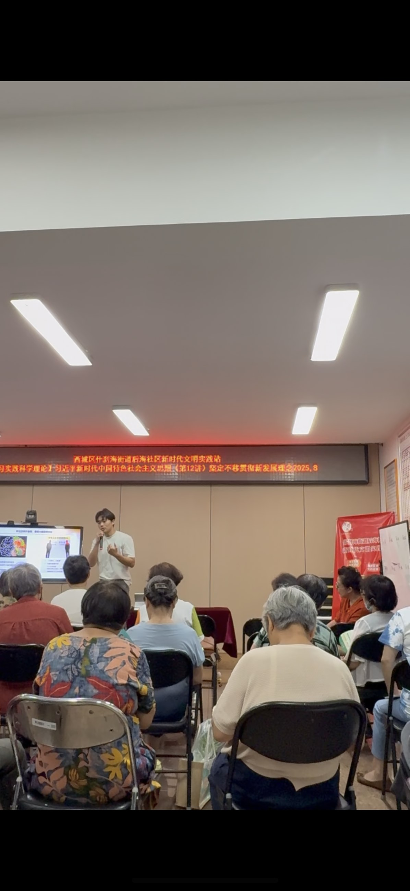
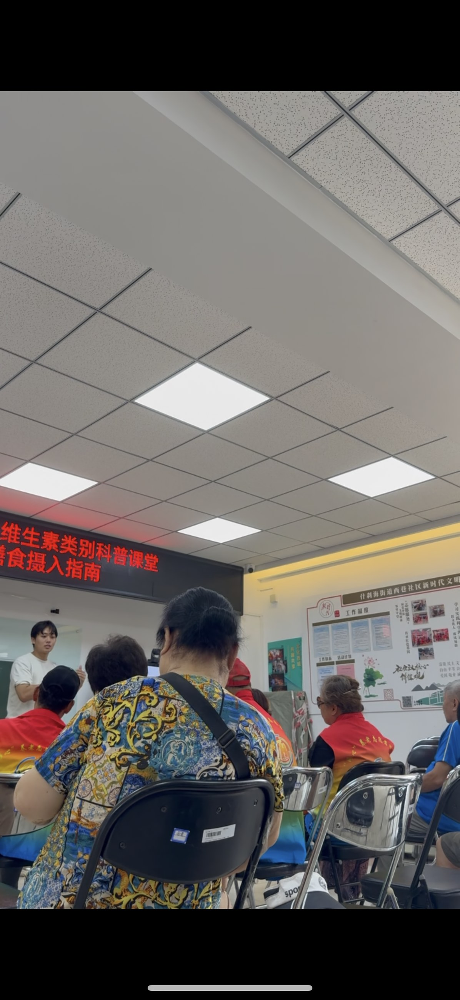
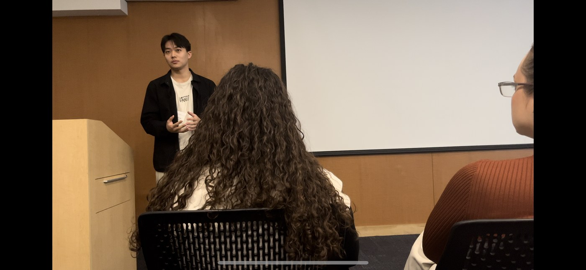

刘益恺 · YIKAI LIU
临床营养 · 公众表达与路演
「1000+ 听众人次」中美路演与科普宣讲
我在北京社区做老年健康方向巡讲，在北美高校用英语汇报课题组营养研究并回应现场提问。
现场记录
版式：上两竖为社区/课堂宣讲抓拍，下一横为讲台类正式汇报场景。



- 北京社区「老年健康」巡讲：阿尔茨海默饮食预防、补剂解析、地中海饮食本土化等。
- 北美高校全英文学术路演：代表多伦多大学、密歇根大学课题组汇报医学营养研究，高强度 Q&A。